Het beeldmerk van Orbit is een taak in beweging. De kop leidt in rood, de kleur van Nu. De staart loopt rondom taps uit tot een punt, zoals de bollen in de app. Eén vorm, twee kleuren, met en zonder naam.
Idee
Wat dringend is, komt dichterbij en gaat sneller.
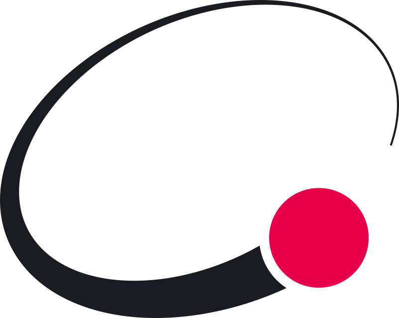
Systeem
Lockups
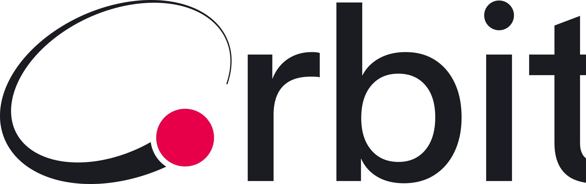
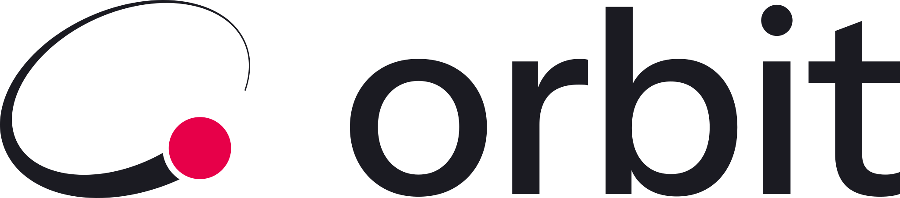
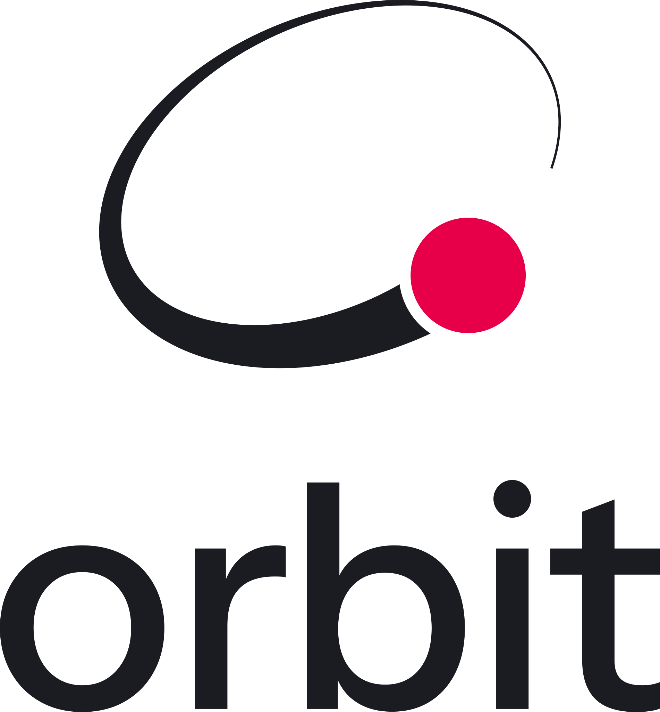
Geïntegreerd woordmerk (het logo als 'O'): het beeldmerk fungeert rechtstreeks als de beginkapitaal direct voor 'rbit'. De bovenkant (hoogte 742 eenheden) lijnt optisch strak uit met de stok van de b (-720 met -10 curve-overshoot), de onderboog landt op de basislijn met +12 overshoot, en de tussenruimte naar de r is gekalibreerd op 65 eenheden. Dit lost definitief de mogelijke lezing van "C orbit" op en smeedt symbool en naam samen tot één monogram.
Horizontaal: beeldmerk links, het woord orbit rechts. Het merk is iets hoger dan de stokken van de b en de t, de kop staat op de basislijn, en de tussenruimte is 1,6 keer de kopdiameter.
Gestapeld voor vierkante plekken, zoals een splash of een avatar met naam.
Enkel het beeldmerk voor app-icoon en favicon. Enkel het woordmerk waar het beeldmerk al in de buurt staat.
Woordmerk: Instrument Sans Medium (SIL Open Font License 1.1, gebruik in een logo toegestaan). Spatiëring -10 over het hele woord, r-b -16 en i-t -10 extra. De vierkante i-punt is rond gemaakt (Ø 120), zodat hij rijmt op de kop.
Twee tekeningen: groot en klein
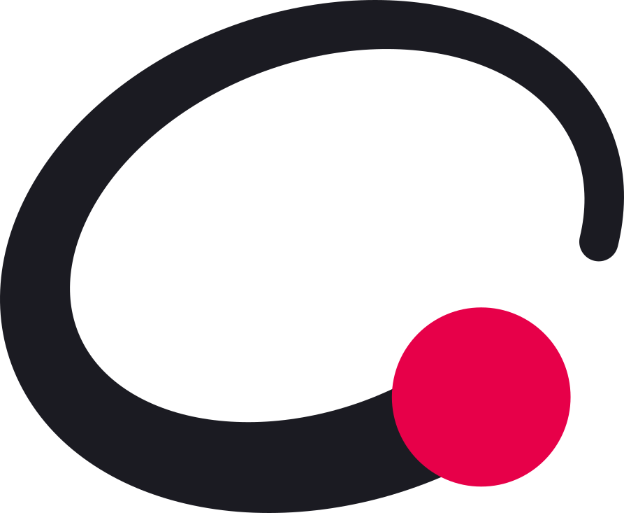
De master geldt vanaf 48 px of 30 mm breed. Daaronder neemt de kleine tekening het over, tot 16 px of 6 mm. Die heeft een dikkere staart (56 tot 150 eenheden), een grotere kop (Ø 256) en geen witte rand: op 16 px zou die als een rendering-fout ogen.
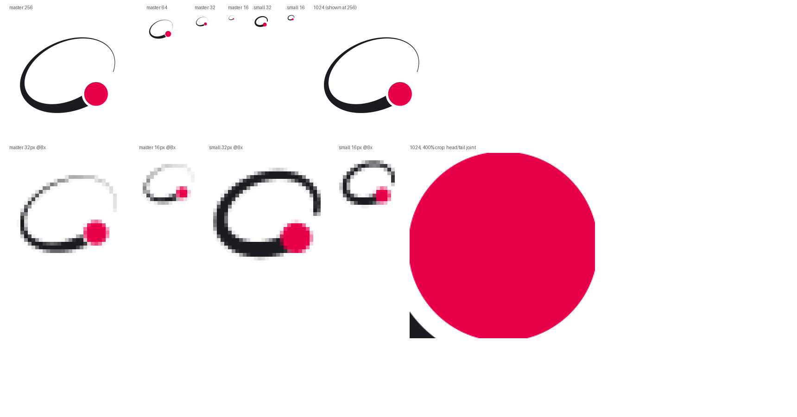
Op 16 px houdt de kleine tekening stand: de ring is 1 tot 2,7 px dik en de kop 4,6 px.
De categorie is verzadigd blauw of rood met een vinkje. Orbit blijft licht en rustig: inkt op papier, met rood alleen voor de kop, zoals Nu in de app. De CMYK-waarden zijn geschat zonder kleurprofiel; laat ze nakijken door de drukker. De Pantone-kandidaten moet je vergelijken met een fysieke Pantone-gids, het zijn geen bevestigde matches.
Combinatie
Contrast
Gebruik
Inkt op papier
15,1 : 1
Alle tekst
Amaranth op papier
4,1 : 1
Groot of grafisch, niet voor kleine tekst (AA vraagt 4,5 : 1)
Inkt licht op nacht
14,5 : 1
Alle tekst in het donker
Amaranth donker op nacht
4,4 : 1
Groot of grafisch
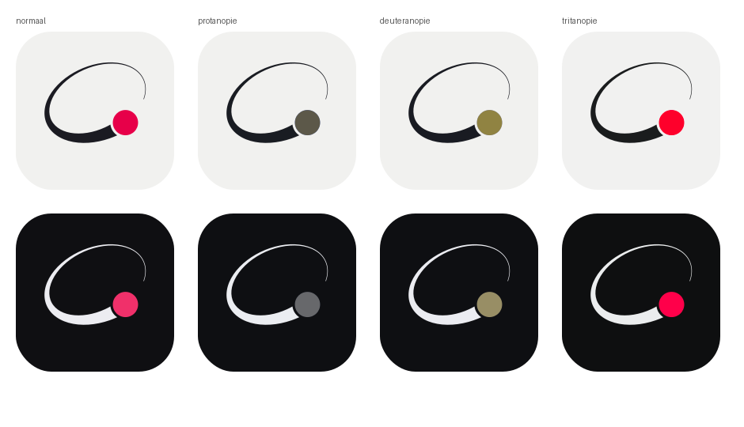
Bij kleurenblindheid verliest de kop zijn rood, maar door de vorm en de witte rand blijft hij herkenbaar als kop.Regels
Ruimte, formaat en wat niet mag
Vrije ruimte
Rondom elk logo minstens één kopdiameter vrij.
Minimum
Master 48 px of 30 mm breed. Kleine tekening 16 px of 6 mm. Horizontale lockup 120 px of 30 mm, met de kleine tekening vanaf 72 px.
Varianten
Volle kleur, volle kleur omgekeerd, inkt, wit, amaranth. Op een foto: wit of inkt, waar het rustig is in het beeld.
Druk
Op 30 mm is de dikste staart 4,2 mm en de witte rand 0,75 mm. De punt loopt bewust dun uit. Zeefdruk en borduren: nakijken met de leverancier.
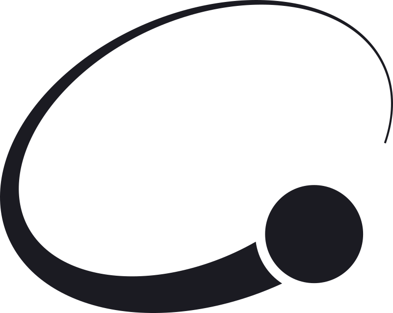
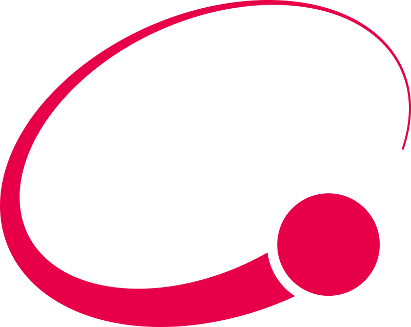
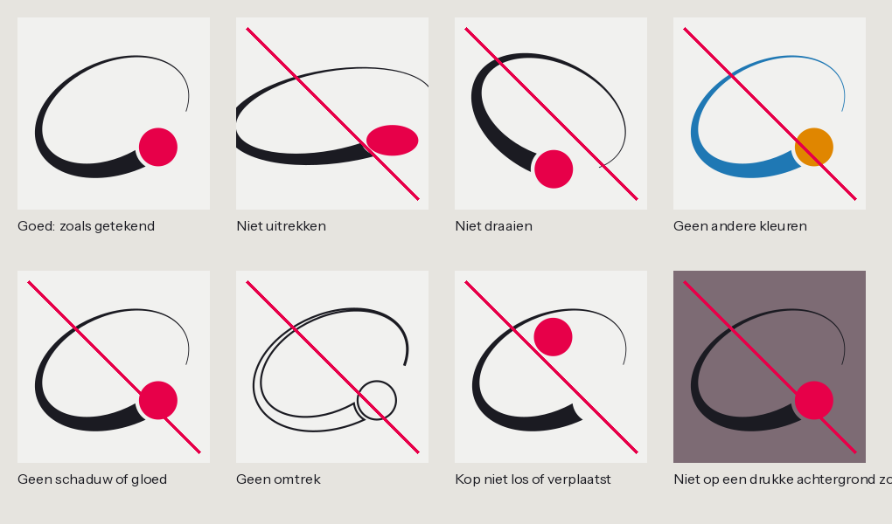
Linksboven zoals het hoort. De rest niet: uitrekken, draaien, andere kleuren, schaduw of gloed, enkel een omtrek, de kop losmaken, een drukke achtergrond zonder rustig vlak.Toepassingen
Icoon, tab en signatuur
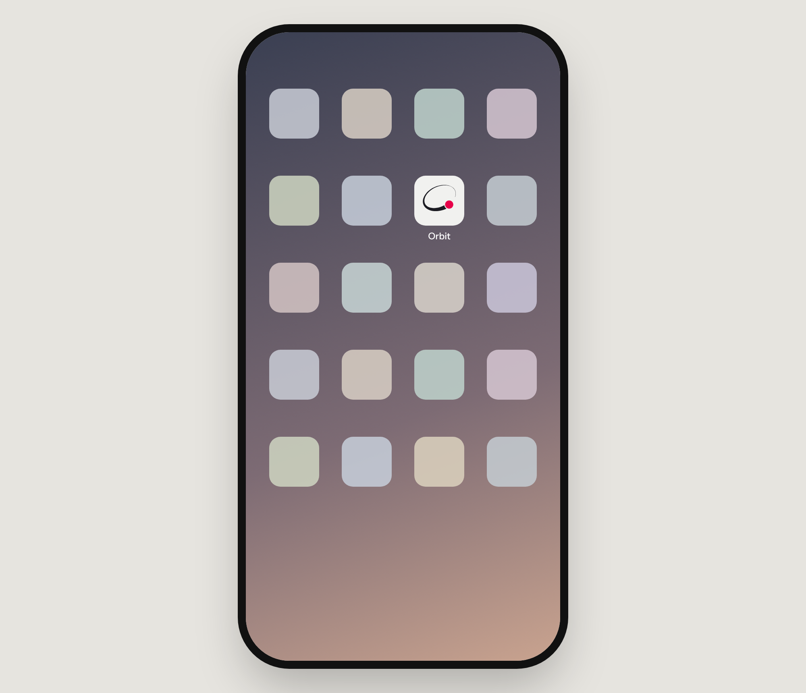
App-icoon op het beginscherm: licht vlak, inkt en een rode kop, rustig tussen verzadigde iconen. De andere iconen zijn neutrale plaatshouders.
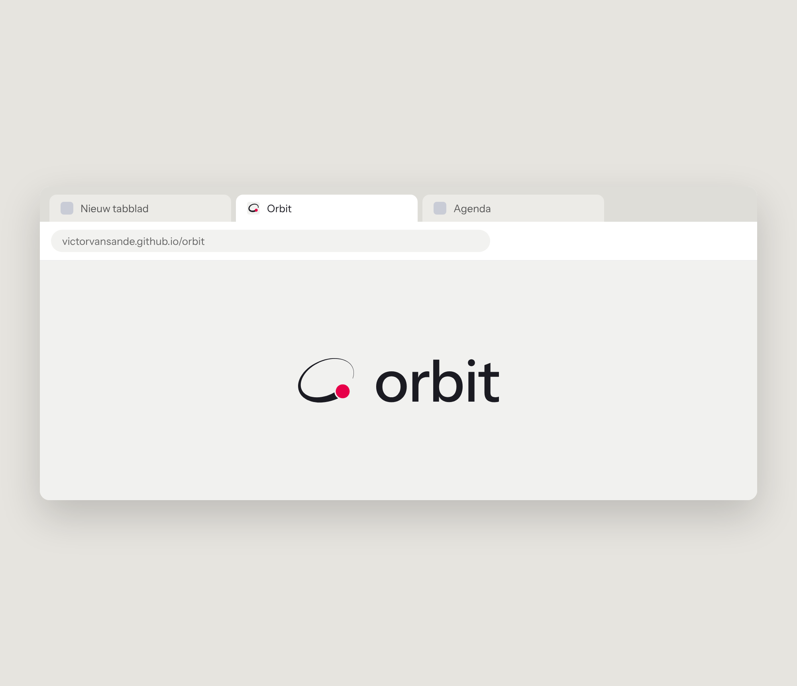
Favicon (kleine tekening op een papieren tegel) in een tab.
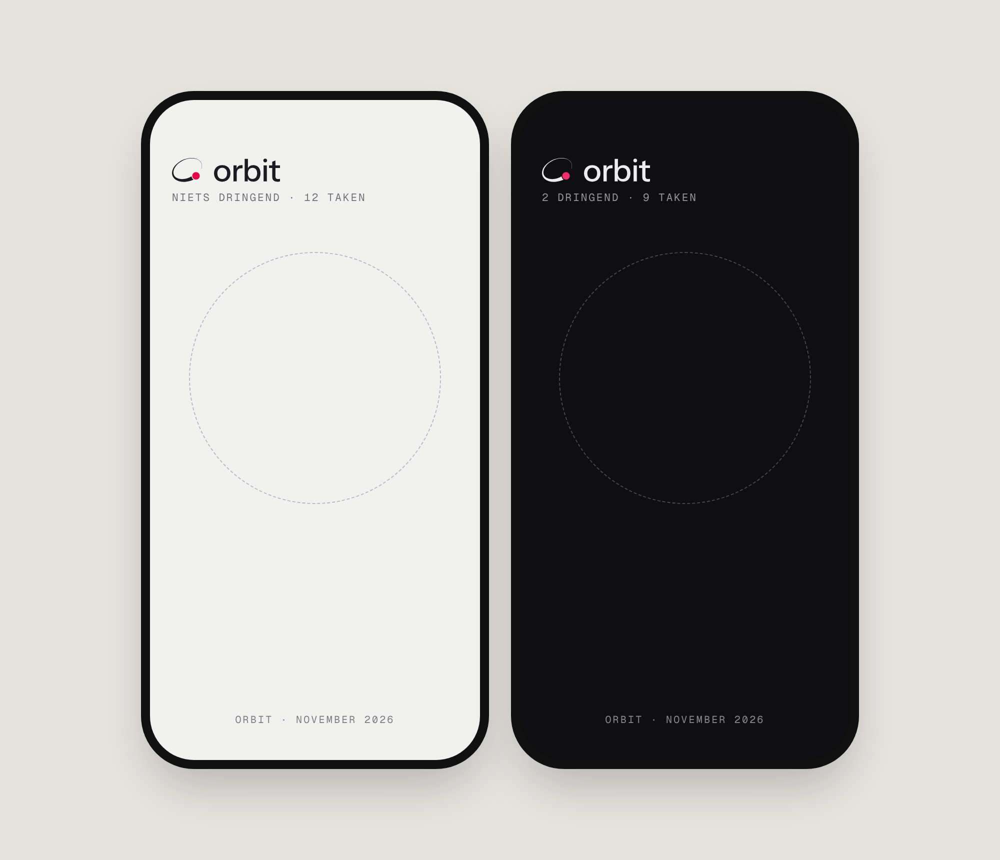
Signatuur in de app, licht en donker.
In Orbit
Zo staat het merk in de app
Sinds 02/11/2026 overal in Orbit: favicon, app-iconen, de kop linksboven, de Uitleg en klein op elke maandrecap. De vormen komen uit één bron, src/core/mark.js.
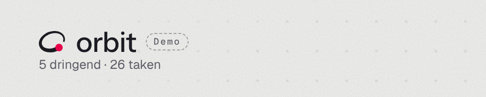
Kop linksboven: kleine tekening met woordmerk, 22 px hoog (gsm 20 px), in de kleuren van het thema.
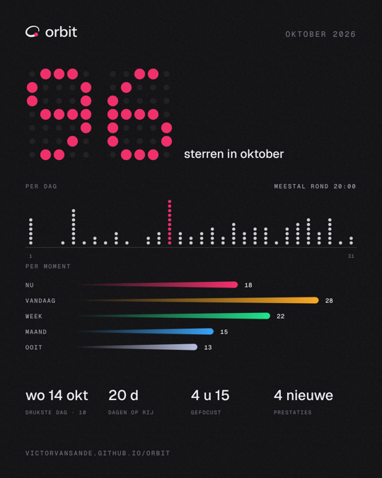
Maandrecap: het merk klein linksboven, basislijn gelijk met de maand.
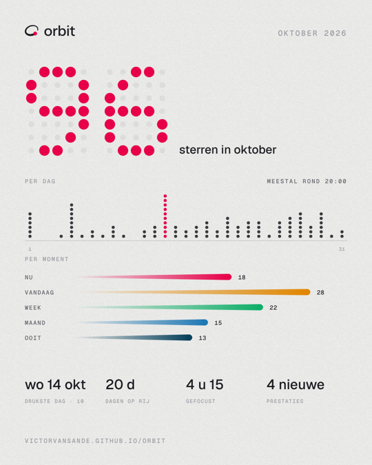
Ook in licht, post en story.
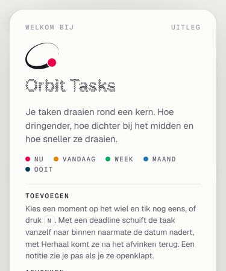
Uitleg: het merk naast het woord, als titel.
Bestanden
Waar alles staat
Deze gids staat ook in de Orbit-repository als brand/merkgids/index.html (online via GitHub Pages op victorvansande.github.io/orbit/brand/merkgids/). Alle bestanden staan onder brand/merk/:
svg/: geïntegreerd woordmerk (logo als 'O'), beeldmerk, kleine tekening, woordmerk, horizontaal en gestapeld, telkens in vijf kleurvarianten, plus de app-iconen licht en donker.
png/512 en png/1024, transparant. Op 2048 px maak je ze opnieuw met tools/build_v4.py.
constructie/ (svg, pdf, png), mockups/, de testbladen en de regels.
Eerlijk wat nog zwak is
Onderscheidend vermogen bleef in vier blinde rondes op 2 tot 3 op 5. Een ring met een bol is een drukke categorie. Het merk werd onder meer gelezen als een C, een piercing-ring of een meldingsbolletje.
In de losse lockup kon het als "C orbit" lezen; het geïntegreerde woordmerk (het logo als 'O') lost dit direct op doordat het beeldmerk zelf de beginkapitaal vormt.
De laatste drie verbeteringen (zwaartepunt bij de kop, grotere kop, staart tot een punt) heb ik zelf nagekeken op renders, maar niet meer blind laten testen. Het protocol stopt na vier rondes.
De naam is een apart risico: er bestaat een Amerikaanse merkaanvraag ORBIT (90211922) voor software die herhaalde taken inplant, en er zijn meerdere to-do-apps met die naam. Laat een specialist een merkonderzoek doen voor je het merk breder gebruikt.
Het auteursrecht op werk dat met hulp van AI gemaakt is, is juridisch nog onzeker.